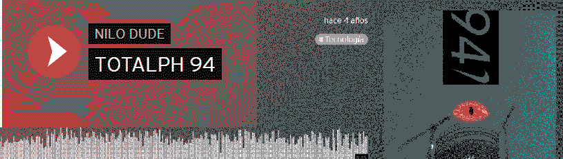
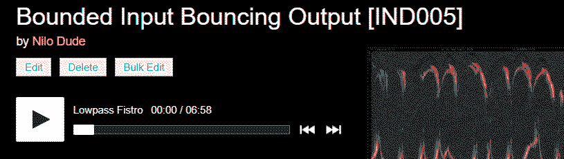
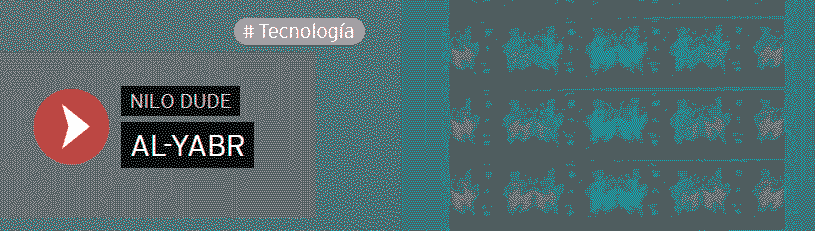
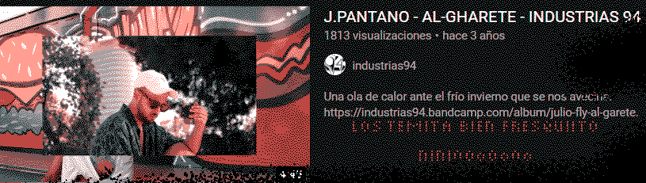
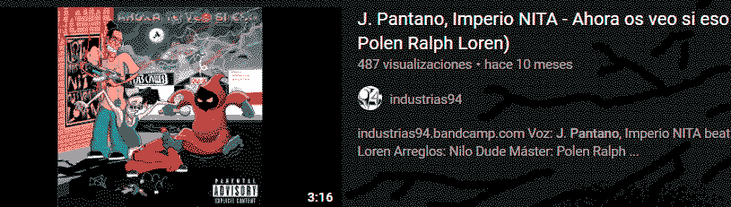

Colectivo multdisciplinar sevillano operando desde 2014. Siempre moviéndonos en los límites del arte y experimentando con las formas de expresión.
¿Tienes alguna propuesta para nosotros? Escríbenos! => olga@telegramacultural.com
Diego 94

Diego 94 al principio solo hacía videos, tampoco grandes obras, pero el medio audiovisual donde flotaba más cómodo. De cachondeo empezo a pinchar en torno a 2014 gracias al Loren y al Alphone, que llevaban partiendo pistas toda la vida. En una cojera en 2016 se descargó el Ableton y empezó a hacer cosillas musicales propias fueraparte de Industrias94 como grupo musical.
Hoy por hoy es un esclavo más del after effects al servicio de una multinacional, que de cuando en cuando saca horas para dedicar a proyectos artísticos.
LORENZO SORIA
Aparte de formar parte de INDUSTRIAS94, Lorenzo Soria está también junto a Fiera y Califato 3/4. También aborda proyectos en solitario como BAZOFIA o Polen Ralph Loren.
Sus producciones beben del sonido cubero, punk y electrónico de la vanguardia underground en Sevilla.
ALPHONE
aka nilo dude
  J PANTANO
Cielo Wear House > Serigraphy studio based in Madrid
 Papito Pepito
Hola soy el papasito pepesito. Estudié bellas artes y programación. Dibujo cosas bonitas y programo páginas webs (como esta).
¡Siempre estoy en busca de nuevas aventuras! Mándame un email a diegoperezobrero@gmail.com si tienes alguna que ofrecerme :)